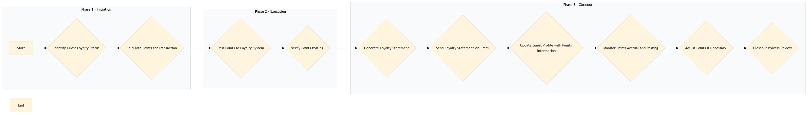

| Role | Steps |
|---|---|
| Front Desk Agent | 1.1 2.1 3.3 |
| Revenue Manager | 1.2 2.2 3.2 3.4 3.5 3.6 |
| Executive Housekeeper | 3.1 |
| Step | Name | Role | System | Input | Output | KPI | Dec? | Exc? | Pain Point / Risk |
|---|---|---|---|---|---|---|---|---|---|
| 1.1 | Identify Guest Loyalty Status | Front Desk Agent | Oracle OPERA Cloud | Guest check-in details | Loyalty status and points balance | Less than 2 minutes per transaction | Y | N | Incorrect loyalty status identification can lead to inaccurate points accrual. |
| 1.2 | Calculate Points for Transaction | Revenue Manager | Oracle OPERA Cloud, IDeaS G3 RMS | Transaction details (room rate, dining charges, spa services) | Points calculation based on loyalty program rules | Less than 1 minute per transaction | N | Y | Complex point accrual rules can lead to manual errors. |
| 2.1 | Post Points to Loyalty System | Front Desk Agent | Oracle OPERA Cloud, Marriott Bonvoy CRM | Points calculation and guest details | Updated loyalty account with points | Less than 1 minute per transaction | N | Y | System connectivity issues can delay points posting. |
| 2.2 | Verify Points Posting | Revenue Manager | Oracle OPERA Cloud, Marriott Bonvoy CRM | Guest account details | Verification of points posted to loyalty account | Less than 2 minutes per transaction | Y | N | Manual verification can be time-consuming and prone to errors. |
| 3.1 | Generate Loyalty Statement | Executive Housekeeper | Oracle OPERA Cloud, Marriott Bonvoy CRM | Guest account details | Loyalty statement with points summary | Less than 1 minute per transaction | N | Y | Inaccurate data can lead to incorrect loyalty statements. |
| 3.2 | Send Loyalty Statement via Email | Revenue Manager | Oracle OPERA Cloud, Marriott Bonvoy CRM | Loyalty statement and guest contact details | Email with loyalty statement sent to guest | Less than 1 minute per transaction | N | Y | Email delivery failures can result in missed communication opportunities. |
| 3.3 | Update Guest Profile with Points Information | Front Desk Agent | Oracle OPERA Cloud, Marriott Bonvoy CRM | Guest account details and points information | Updated guest profile in loyalty system | Less than 1 minute per transaction | N | Y | Outdated guest profiles can lead to missed opportunities for upselling. |
| 3.4 | Monitor Points Accrual and Posting | Revenue Manager | Oracle OPERA Cloud, Marriott Bonvoy CRM | Daily transaction logs | Report on points accrual and posting accuracy | Less than 30 minutes per day | Y | N | Inconsistent data entry can affect overall loyalty program performance. |
| 3.5 | Adjust Points if Necessary | Revenue Manager | Oracle OPERA Cloud, Marriott Bonvoy CRM | Audit report and transaction details | Adjusted points in guest accounts | Less than 1 minute per adjustment | Y | N | Manual adjustments can be time-consuming and error-prone. |
| 3.6 | Closeout Process Review | Executive Housekeeper | Oracle OPERA Cloud, Marriott Bonvoy CRM | Daily transaction logs and audit reports | Review of points accrual and posting process for improvements | Less than 1 hour per day | Y | N | Continuous improvement requires ongoing monitoring and feedback. |
Process for managing points accrual and posting in Marriott Bonvoy loyalty program at a full-service hotel.